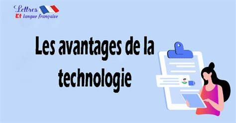

Means of communication
Ordinateur
Un ordinateur est un appareil qui permet de réaliser, d'exécuter des opérations ou des calculs. Il a la capacité de stocker, récupérer et traiter des données. Vous pouvez également utiliser un ordinateur pour saisir des documents, envoyer des courriels, jouer à des jeux vidéos et naviguer sur Internet1
Tablette
La tablette est un outil informatique indispensable pour les utilisateurs qui se déplacent régulièrement. Plus compact et plus léger qu'un ordinateur portable, elle possède des caractéristiques techniques très intéressantes.
Telephone
Le téléphone est un appareil de communication initialement conçu pour transmettre la voix humaine et pouvoir communiquer à distance. Pour fonctionner, le téléphone nécessite une infrastructure terrestre ou spatiale : le réseau téléphonique. Après y avoir raccordé son terminal fixe ou avoir allumé son téléphone …
Means of transportation
Moto cicle
Une moto, apocope de motocyclette, est un véhicule motorisé, sans carrosserie, à deux roues le plus souvent monotraces (en ligne), pouvant être équipé d'un side-car . Inventées dans la deuxième moitié du XIX siècle dans le même temps que les premiers moteurs thermiques, les motos se déclinent
Plane
An airplane (North American English) or aeroplane (British English), informally plane, is a fixed-wing aircraft that is propelled forward by thrust from a jet engine, propeller, or rocket engine. Airplanes come in a variety of sizes, shapes, and wing configurations. The broad spectrum of uses for airplanes
Car
Vividly detailing cars accomplishes much more than just visually depicting what a car looks like. Masterful car descriptions in writing evoke visceral emotions in the reader, provide windows into characters’ personalities, and transport audiences to fantastical settings limited only by imagination.
Houseehold applianee
Fridge
A refrigerator is a machine used for keeping things cold. It is sometimes called a fridge or an icebox. It is normally maintained at 4-5 degree Celsius for household use. People put food and drinks in it, to keep those items cold or good (unspoiled) for a longer time.
Oven
An oven is a kitchen appliance used for cooking or heating food by baking or roasting. It uses dry heat to gradually raise the temperature within, surrounding the food and allowing it to cook evenly. Ovens have been in use for centuries and have evolved significantly in terms of design and functionality.

Washing Machine
A washing machine also know as a washer is a machine that washes dirty clothes. It contains a barrel into which the clothes are placed. This barrel is filled with water, and then rotated very quickly by the use of a motor to make the water remove dirt from the clothes.
Recent Posts
-
Advantages of technology

Improves business efficiency The best benefit of any technology is that it increases the efficiency of a business process. We can complete more tasks in less time. ... Best Communication: ... Encouraging innovation and creation: ... Improving human resource management: ... Time saving: ....
Published on Avril 1, 2020
-
The Disadvantages of Technology
Human relationships are diminishing in the virtual world. ... Human beings are becoming less and less valued in the workplace as their roles are being replaced by computers. ... Privacy issues have become enormous as it becomes increasingly difficult to control personal information in the digital world and the Internet. ...
Published on September 29, 2023
-
Computer Developer
Découvrez le métier de développeur informatique, expert des langages informatiques, qui traduit la demande d'un client en lignes de code. Apprenez les compétences requises, les secteurs d'activité, les études et le salaire de ce métier en pleine croissance.
Published on September 20, 2024
-
New Computer Technology
Augmented Reality. Although realities … Quantum Computing. Once confined to … Smart Cities. By incorporating technologies … Blockchain. Blockchain is a technology of
Published on September 15, 2024